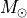

Using cosmic to run BSE¶
cosmic can evolve binaries for several different use cases. Below you’ll find examples to run a single binary system, multiple binary systems or a grid of binaries.
See ‘Running a Milky Way population’ below for the process to simulate a population of binaries consistent with a user-supplied star formation history for a single compact object population (e.g. BH-BH) or a range of compact object populations (e.g. combinations of BH, NS, WD) as described in Breivik+2018.
single binary¶
Below is the process to initialize and evolve a binary that could have formed a GW150914-like binary. First, import the modules in cosmic that initialize and evolve the binary.
In [1]: from cosmic.sample.initialbinarytable import InitialBinaryTable
In [2]: from cosmic.evolve import Evolve
To initialize a single binary, populate the SingleBinary method in the InitialBinaryTable class. Each initialized binary requires the following parameters:
- m1 : ZAMS mass of the primary star in 
- m2 : ZAMS mass of the secondary star in
- porb : initial orbital period in days
- ecc : initial eccentricity
- tphysf : total evolution time of the binary in Myr
- kstar1 : initial primary stellar type, following the BSE convention
- kstar2 : initial secondary stellar type, following the BSE convention
- metallicity : metallicity fraction (e.g. )
In [3]: single_binary = InitialBinaryTable.SingleBinary(m1=85.543645, m2=84.99784, porb=446.795757, ecc=0.448872, tphysf=13700.0, kstar1=1, kstar2=1, metallicity=0.002)
In [4]: print(single_binary)
kstar_1 kstar_2 mass1_binary mass2_binary porb ecc metallicity binfrac tphysf
0 1.0 1.0 85.543645 84.99784 446.795757 0.448872 0.002 1.0 13700.0
The flags for the various binary evolution prescriptions used in BSE also need to be set. Each flag is saved in the BSEDict dictionary. Note that the BSEDict only needs to be specified the first time a binary is evolved with cosmic or if you need to change the binary evolution prescriptions.
If you are unfamiliar with these prescriptions, it is highly advised to either run the defaults from the cosmic install (which are consistent with Rodriguez+2018 and Kremer+2018) or refer to Hurley+2002.
In [5]: BSEDict = {'xi': 0.5, 'bhflag': 1, 'neta': 0.5, 'windflag': 3, 'wdflag': 0, 'alpha1': 1.0, 'pts1': 0.001, 'pts3': 0.02, 'pts2': 0.01, 'epsnov': 0.001, 'hewind': 1.0, 'ck': -1000, 'bwind': 0.0, 'lambdaf': 1.0, 'mxns': 3.0, 'beta': -1.0, 'tflag': 1, 'acc2': 1.5, 'nsflag': 4, 'ceflag': 0, 'eddfac': 1.0, 'ifflag': 0, 'bconst': -3000, 'sigma': 265.0, 'gamma': -2.0, 'pisn': 45.0, 'natal_kick_array' : [-100.0,-100.0,-100.0,-100.0,-100.0,-100.0], 'bhsigmafrac' : 1.0, 'polar_kick_angle' : 90, 'qcrit_array' : [0.0,0.0,0.0,0.0,0.0,0.0,0.0,0.0,0.0,0.0,0.0,0.0,0.0,0.0,0.0,0.0], 'cekickflag' : 2, 'cehestarflag' : 0, 'cemergeflag' : 0, 'ecsn' : 2.5, 'ecsn_mlow' : 1.4, 'aic' : 1, 'ussn' : 0, 'sigmadiv' :-20.0, 'qcflag' : 3, 'eddlimflag' : 0, 'fprimc_array' : [2.0/21.0,2.0/21.0,2.0/21.0,2.0/21.0,2.0/21.0,2.0/21.0,2.0/21.0,2.0/21.0,2.0/21.0,2.0/21.0,2.0/21.0,2.0/21.0,2.0/21.0,2.0/21.0,2.0/21.0,2.0/21.0]}
Once the binary is initialized and the BSE model is set, the system is evolved with the the Evolve class, which calls the evolv2.f subroutine in the BSE source code.
In [6]: bpp, bcm, initC = Evolve.evolve(initialbinarytable=single_binary, BSEDict=BSEDict)
For every evolved binary system, BSE generates two arrays, which are stored as pandas DataFrames in cosmic:
- bpp - contains binary parameters at important stages in the binary’s evolution, including stellar evolutionary phase changes or mass transfer episodes.
- bcm - contains several binary parameters at user specified time steps during the binary’s evolution. The default setting in cosmic is to output the final stage of the binary at the evolution time specified by the user.
You can see the different parameters included in each DataFrame using the columns attribute of the DataFrame:
In [7]: print(bpp.columns)
Index(['tphys', 'mass_1', 'mass_2', 'kstar_1', 'kstar_2', 'sep', 'porb', 'ecc',
'RROL_1', 'RROL_2', 'evol_type', 'Vsys_1', 'Vsys_2', 'SNkick',
'SNtheta', 'aj_1', 'aj_2', 'tms_1', 'tms_2', 'massc_1', 'massc_2',
'rad_1', 'rad_2', 'bin_num'],
dtype='object')
In [8]: print(bcm.columns)
�������������������������������������������������������������������������������������������������������������������������������������������������������������������������������������������������������������������������������������������������������������������������������������������Index(['tphys', 'kstar_1', 'mass0_1', 'mass_1', 'lumin_1', 'rad_1', 'teff_1',
'massc_1', 'radc_1', 'menv_1', 'renv_1', 'epoch_1', 'ospin_1',
'deltam_1', 'RROL_1', 'kstar_2', 'mass0_2', 'mass_2', 'lumin_2',
'rad_2', 'teff_2', 'massc_2', 'radc_2', 'menv_2', 'renv_2', 'epoch_2',
'ospin_2', 'deltam_2', 'RROL_2', 'porb', 'sep', 'ecc', 'B_0_1', 'B_0_2',
'SNkick_1', 'SNkick_2', 'Vsys_final', 'SNtheta_final', 'SN_1', 'SN_2',
'bin_state', 'merger_type', 'bin_num'],
dtype='object')
The units are broadly consistent with BSE; masses, radii are in Solar units, temperatures are in log-Kelvin, luminosities are in log-Solar luminosity, orbital periods are in log-seconds, semi-major axes are in solar radii, and times are in units of Myr.
The evol_type column in bpp indicates the evolutionary change that occured for each line. The meaning of each number is described here, Evolve Type.
Each of the parameters in bpp or bcm can be accessed in the usual way for DataFrames.
In [9]: print(bpp.mass_1)
0 79.094933
0 78.936077
0 74.938003
0 62.496557
0 36.188609
0 35.959029
0 29.750532
0 26.775479
0 26.775482
0 26.775482
0 26.777384
0 26.783316
0 26.783316
0 26.783316
0 26.783316
0 26.783320
0 26.783320
0 26.783320
Name: mass_1, dtype: float64
In [10]: print(bpp[['mass_1', 'mass_2', 'kstar_1', 'kstar_2', 'sep', 'evol_type']])
����������������������������������������������������������������������������������������������������������������������������������������������������������������������������������������������������������������������������������������������������������������������������������������������������������� mass_1 mass_2 kstar_1 kstar_2 sep evol_type
0 79.094933 78.667491 2.0 1.0 1473.875468 2.0
0 78.936077 78.678822 2.0 1.0 1467.357153 3.0
0 74.938003 82.622531 2.0 1.0 1403.570117 14.0
0 62.496557 94.987512 4.0 1.0 1502.124212 2.0
0 36.188609 120.165425 4.0 1.0 2110.880539 4.0
0 35.959029 120.284557 7.0 1.0 2107.818485 2.0
0 29.750532 118.328046 7.0 1.0 2224.066700 15.0
0 26.775479 118.328046 14.0 1.0 2270.638030 2.0
0 26.775482 95.640640 14.0 2.0 2690.680737 2.0
0 26.775482 95.639917 14.0 2.0 2690.696579 12.0
0 26.777384 95.437505 14.0 2.0 2694.451658 3.0
0 26.783316 45.675266 14.0 4.0 479.329520 2.0
0 26.783316 45.675266 14.0 4.0 479.329520 7.0
0 26.783316 45.424485 14.0 7.0 413.011497 8.0
0 26.783316 45.424485 14.0 7.0 413.011497 4.0
0 26.783320 36.278126 14.0 7.0 472.925641 16.0
0 26.783320 32.650313 14.0 14.0 503.669488 2.0
0 26.783320 32.650313 14.0 14.0 503.372715 10.0
multiple binaries¶
Multiple systems can also be initialized and evolved; below is an example for systems that could form GW150914 and GW170817 - like binaries.
In [11]: binary_set = InitialBinaryTable.MultipleBinary(m1=[100.0, 11.8], m2=[85.0, 11.1], porb=[10000.0,2211.0], ecc=[0.65,0.55], tphysf=[13700.0,13700.0], kstar1=[1,1], kstar2=[1,1], metallicity=[0.005,0.02])
In [12]: print(binary_set)
kstar_1 kstar_2 mass1_binary mass2_binary porb ecc metallicity binfrac tphysf
0 1.0 1.0 100.0 85.0 10000.0 0.65 0.005 1.0 13700.0
1 1.0 1.0 11.8 11.1 2211.0 0.55 0.020 1.0 13700.0
In [13]: bpp, bcm, initC = Evolve.evolve(initialbinarytable=binary_set, BSEDict=BSEDict)
Note that the BSEDict did not be reinitialized since the BSE model did not change.
As before, bpp, bcm, and initC are returned as pandas DataFrames which assign an index to each binary system we evolve. We can access each binary as follows
In [14]: print(bpp.loc[0])
tphys mass_1 mass_2 kstar_1 kstar_2 ... massc_1 massc_2 rad_1 rad_2 bin_num
0 3.537393 79.856408 74.601383 2.0 1.0 ... 35.614667 0.000000 50.062601 50.719287 0
0 3.540254 79.467829 74.600037 4.0 1.0 ... 36.326881 0.000000 1654.495522 50.975155 0
0 3.690710 56.899437 77.324114 4.0 2.0 ... 37.941472 34.097933 1958.021021 47.960822 0
0 3.693646 56.465653 77.033054 4.0 4.0 ... 37.972974 34.779822 1964.092842 1613.156443 0
0 3.816675 39.277256 63.265858 7.0 4.0 ... 0.000000 36.082256 2.215200 1809.318642 0
0 3.895830 34.701463 51.392680 7.0 4.0 ... 0.000000 36.920209 1.998783 1975.823119 0
0 3.895830 31.231317 51.392680 14.0 4.0 ... 31.231317 36.920213 0.000132 1975.823873 0
0 3.895830 31.231317 51.392680 14.0 4.0 ... 31.231317 36.920213 0.000132 1975.823873 0
0 3.985013 32.154326 38.015185 14.0 4.0 ... 32.154326 37.864338 0.000136 19.480787 0
0 3.996105 32.154327 37.978304 14.0 7.0 ... 32.154327 0.000000 0.000136 2.170012 0
0 4.057229 32.154327 34.009760 14.0 7.0 ... 32.154327 0.000000 0.000136 1.974595 0
0 4.057229 32.154327 30.608784 14.0 14.0 ... 32.154327 30.608784 0.000136 0.000130 0
0 13700.000000 32.154327 30.608784 14.0 14.0 ... 32.154327 30.608784 0.000136 0.000130 0
[13 rows x 24 columns]
In [15]: print(bcm.loc[0])
�������������������������������������������������������������������������������������������������������������������������������������������������������������������������������������������������������������������������������������������������������������������������������������������������������������������������������������������������������������������������������������������������������������������������������������������������������������������������������������������������������������������������������������������������������������������������������������������������������������������������������������������������������������������������������������������������������������������������������������������������������������������������������������������������������������������������������������������������������������������������������������������������������������������������������������������������������������������������������������������������������������������������������������������������������������������������������������������������������������������������������������������������������������������������������������������������������������������������������������������������������������������������������������������������������������������������������������������������������������������������������������������������������������������������������������������������������������������������������������������������������������������������������������������������������������������������������������������������������������������������������������������������������������������������������������������������������������������������������������������� tphys kstar_1 mass0_1 mass_1 lumin_1 ... SN_1 SN_2 bin_state merger_type bin_num
0 0.346679 1.0 99.000000 99.000000 1.276936e+06 ... 0.0 0.0 0 -001 0
0 13700.000000 14.0 34.701463 32.154327 1.000000e-10 ... 1.0 1.0 0 -001 0
[2 rows x 43 columns]
In [16]: print(initC.loc[0])
����������������������������������������������������������������������������������������������������������������������������������������������������������������������������������������������������������������������������������������������������������������������������������������������������������������������������������������������������������������������������������������������������������������������������������������������������������������������������������������������������������������������������������������������������������������������������������������������������������������������������������������������������������������������������������������������������������������������������������������������������������������������������������������������������������������������������������������������������������������������������������������������������������������������������������������������������������������������������������������������������������������������������������������������������������������������������������������������������������������������������������������������������������������������������������������������������������������������������������������������������������������������������������������������������������������������������������������������������������������������������������������������������������������������������������������������������������������������������������������������������������������������������������������������������������������������������������������������������������������������������������������������������������������������������������������������������������������������������������������������������������������������������������������������������������������������������������������������������������������������������������������������������������������������������������������������������������������������������������������������������������������������������������������������������������������������������������������������������������������kstar_1 1.000000
kstar_2 1.000000
mass1_binary 100.000000
mass2_binary 85.000000
porb 10000.000000
ecc 0.650000
metallicity 0.005000
binfrac 1.000000
tphysf 13700.000000
neta 0.500000
bwind 0.000000
hewind 1.000000
alpha1 1.000000
lambdaf 1.000000
ceflag 0.000000
tflag 1.000000
ifflag 0.000000
wdflag 0.000000
pisn 45.000000
bhflag 1.000000
nsflag 4.000000
cekickflag 2.000000
cemergeflag 0.000000
cehestarflag 0.000000
mxns 3.000000
pts1 0.001000
pts2 0.010000
pts3 0.020000
ecsn 2.500000
ecsn_mlow 1.400000
...
qcrit_2 0.000000
qcrit_3 0.000000
qcrit_4 0.000000
qcrit_5 0.000000
qcrit_6 0.000000
qcrit_7 0.000000
qcrit_8 0.000000
qcrit_9 0.000000
qcrit_10 0.000000
qcrit_11 0.000000
qcrit_12 0.000000
qcrit_13 0.000000
qcrit_14 0.000000
qcrit_15 0.000000
fprimc_0 0.095238
fprimc_1 0.095238
fprimc_2 0.095238
fprimc_3 0.095238
fprimc_4 0.095238
fprimc_5 0.095238
fprimc_6 0.095238
fprimc_7 0.095238
fprimc_8 0.095238
fprimc_9 0.095238
fprimc_10 0.095238
fprimc_11 0.095238
fprimc_12 0.095238
fprimc_13 0.095238
fprimc_14 0.095238
fprimc_15 0.095238
Name: 0, Length: 88, dtype: float64
In [17]: print(bpp.loc[1])
��������������������������������������������������������������������������������������������������������������������������������������������������������������������������������������������������������������������������������������������������������������������������������������������������������������������������������������������������������������������������������������������������������������������������������������������������������������������������������������������������������������������������������������������������������������������������������������������������������������������������������������������������������������������������������������������������������������������������������������������������������������������������������������������������������������������������������������������������������������������������������������������������������������������������������������������������������������������������������������������������������������������������������������������������������������������������������������������������������������������������������������������������������������������������������������������������������������������������������������������������������������������������������������������������������������������������������������������������������������������������������������������������������������������������������������������������������������������������������������������������������������������������������������������������������������������������������������������������������������������������������������������������������������������������������������������������������������������������������������������������������������������������������������������������������������������������������������������������������������������������������������������������������������������������������������������������������������������������������������������������������������������������������������������������������������������������������������������������������������������������������������������������������������������������������������������������������������������������������������������������������������������������������������������������������������������������������������������������������������������������������������������������������������������������������������������������������������������������������������������������������������������������������������������������������������������������������������������������������������������������������������������������������������������������������������������������������������������������������������������������������������������������������������������������������������������������������������������������������������������������������������������������������������������������������������������������������������������������������������������������������������������������������������������������������������������������������������������������������������������������������������������������������������������������������������������������������������������������������������������������������������������������������������������������������������������������������������������������������������������������������������������������������������������������������������������������������������������������������������������������������������������������������������������������������������������������������������������������������������������������������������������������������������������������������������������������������������������������������������������������������������������������������������������������������������������������������������������������������������������������������������������������������������������������������������������������������������������������������������������� tphys mass_1 mass_2 kstar_1 kstar_2 ... massc_1 massc_2 rad_1 rad_2 bin_num
1 18.364415 11.520052 10.909115 2.0 1.0 ... 2.606170 0.000000 10.377378 9.154203 1
1 18.409054 11.515971 10.907684 3.0 1.0 ... 2.657025 0.000000 253.588958 9.201944 1
1 18.413279 11.514165 10.907761 4.0 1.0 ... 2.657136 0.000000 489.343727 9.206627 1
1 20.381291 10.909588 10.896085 4.0 2.0 ... 3.439131 2.417346 147.470050 9.978069 1
1 20.432119 10.887458 10.894033 4.0 3.0 ... 3.459328 2.465073 205.839856 229.140010 1
1 20.437847 10.884775 10.892412 4.0 4.0 ... 3.461604 2.465212 214.531781 450.055879 1
1 20.534215 10.828794 10.837118 5.0 4.0 ... 3.499896 2.497700 487.630678 401.151523 1
1 20.541357 10.821833 10.834715 5.0 4.0 ... 3.499896 2.500107 507.294619 398.158176 1
1 20.541357 10.821833 10.834715 5.0 4.0 ... 3.499896 2.500107 507.294619 398.158176 1
1 20.541357 3.499896 2.500107 8.0 7.0 ... 1.950729 0.000000 507.294619 398.158176 1
1 20.541357 3.499896 2.500107 8.0 7.0 ... 1.950729 0.000000 0.518342 0.389854 1
1 20.667965 3.397301 2.499276 8.0 7.0 ... 2.354506 0.000000 9.360846 0.394765 1
1 20.668140 3.397007 2.499314 8.0 7.0 ... 2.355254 0.000000 9.458086 0.394774 1
1 20.668140 1.277515 2.499314 13.0 7.0 ... 2.355254 0.000000 9.458086 0.394774 1
1 23.737838 1.277515 2.348143 13.0 8.0 ... 1.277515 1.140529 0.000014 0.373212 1
1 24.017469 1.277515 2.297315 13.0 8.0 ... 1.277515 1.462633 0.000014 17.908485 1
1 24.017469 1.277515 1.277515 13.0 13.0 ... 1.277515 1.277515 0.000014 0.000014 1
1 13700.000000 1.277515 1.277515 13.0 13.0 ... 1.277515 1.277515 0.000014 0.000014 1
[18 rows x 24 columns]
grid of binaries¶
Sometimes it is helpful to run a grid of initial binaries to explore how changing a single paramter affects the evolved binary. Here we evolve the same system that produces a GW150914-like binary, but run over several initial orbital periods spaced evenly in log space.
In [18]: n_grid = 10
In [19]: binary_grid = InitialBinaryTable.MultipleBinary(m1=np.ones(n_grid)*100.0, m2=np.ones(n_grid)*85.0, porb=np.logspace(3,5,n_grid), ecc=np.ones(n_grid)*0.65, tphysf=np.ones(n_grid)*13700.0, kstar1=np.ones(n_grid), kstar2=np.ones(n_grid), metallicity=np.ones(n_grid)*0.005)
In [20]: print(binary_grid)
kstar_1 kstar_2 mass1_binary mass2_binary porb ecc metallicity binfrac tphysf
0 1.0 1.0 100.0 85.0 1000.000000 0.65 0.005 1.0 13700.0
1 1.0 1.0 100.0 85.0 1668.100537 0.65 0.005 1.0 13700.0
2 1.0 1.0 100.0 85.0 2782.559402 0.65 0.005 1.0 13700.0
3 1.0 1.0 100.0 85.0 4641.588834 0.65 0.005 1.0 13700.0
4 1.0 1.0 100.0 85.0 7742.636827 0.65 0.005 1.0 13700.0
5 1.0 1.0 100.0 85.0 12915.496650 0.65 0.005 1.0 13700.0
6 1.0 1.0 100.0 85.0 21544.346900 0.65 0.005 1.0 13700.0
7 1.0 1.0 100.0 85.0 35938.136638 0.65 0.005 1.0 13700.0
8 1.0 1.0 100.0 85.0 59948.425032 0.65 0.005 1.0 13700.0
9 1.0 1.0 100.0 85.0 100000.000000 0.65 0.005 1.0 13700.0
In [21]: bpp, bcm, initC = Evolve.evolve(initialbinarytable=binary_grid, BSEDict=BSEDict)
In [22]: print(bpp)
tphys mass_1 mass_2 kstar_1 kstar_2 ... massc_1 massc_2 rad_1 rad_2 bin_num
0 3.537393 79.856416 74.601412 2.0 1.0 ... 35.614672 0.000000 50.062608 50.719313 0
0 3.539811 79.534315 74.618369 2.0 1.0 ... 36.216558 0.000000 962.019751 50.951009 0
0 3.539811 79.534315 74.618369 2.0 1.0 ... 36.216558 0.000000 962.019751 50.951009 0
0 3.539811 122.876845 74.618369 2.0 15.0 ... 64.710987 0.000000 962.019751 50.951009 0
0 3.540142 122.827267 0.000000 4.0 15.0 ... 64.908119 0.000000 2292.874181 50.951009 0
0 3.874681 72.646283 0.000000 5.0 15.0 ... 68.324336 0.000000 2740.120311 50.951009 0
0 3.890502 122.876845 0.000000 15.0 15.0 ... 68.324336 0.000000 10093.083786 50.951009 0
0 13700.000000 0.000000 0.000000 15.0 15.0 ... 68.324336 0.000000 10093.083786 50.951009 0
1 3.537393 79.856412 74.601397 2.0 1.0 ... 35.614669 0.000000 50.062604 50.719299 1
1 3.540100 79.490962 74.618110 2.0 1.0 ... 36.288497 0.000000 1370.022035 50.976860 1
1 3.540100 79.490962 74.618110 2.0 1.0 ... 36.288497 0.000000 1370.022035 50.976860 1
1 3.540100 112.647935 74.618110 2.0 15.0 ... 57.751053 0.000000 1370.022035 50.976860 1
1 3.540221 112.629761 0.000000 4.0 15.0 ... 57.812143 0.000000 2146.799080 50.976860 1
1 3.880513 61.586055 0.000000 5.0 15.0 ... 61.430520 0.000000 5.962654 50.976860 1
1 3.896801 61.520542 0.000000 5.0 15.0 ... 61.430520 0.000000 3.101640 50.976860 1
1 3.896801 40.500000 0.000000 14.0 15.0 ... 40.500000 0.000000 0.000172 50.976860 1
1 13700.000000 40.500000 0.000000 14.0 15.0 ... 40.500000 0.000000 0.000172 50.976860 1
2 3.537393 79.856409 74.601389 2.0 1.0 ... 35.614668 0.000000 50.062602 50.719292 2
2 3.540254 79.467830 74.613751 4.0 1.0 ... 36.326883 0.000000 1654.495551 50.987014 2
2 3.547863 78.326514 74.832444 4.0 1.0 ... 36.408535 0.000000 1668.345113 51.877035 2
2 3.547863 78.326514 74.832444 4.0 1.0 ... 36.408535 0.000000 1668.345113 51.877035 2
2 3.547863 36.408535 74.832444 7.0 1.0 ... 0.000000 0.000000 1668.345113 51.877035 2
2 3.547863 36.408535 74.832444 7.0 1.0 ... 0.000000 0.000000 2.057858 51.877035 2
2 3.691422 30.847041 74.504398 7.0 2.0 ... 0.000000 32.429458 1.920454 45.684124 2
2 3.693339 30.783076 74.278267 7.0 2.0 ... 0.000000 32.840373 1.918887 429.081822 2
2 3.693754 31.309501 73.678875 4.0 2.0 ... 31.081099 32.929244 295.768819 698.265616 2
2 3.693754 31.309501 73.678875 4.0 2.0 ... 31.081099 32.929244 295.768819 698.265616 2
2 3.693754 31.081099 32.929244 7.0 7.0 ... 0.000000 0.000000 295.768819 698.265616 2
2 3.888962 24.562899 26.891074 7.0 7.0 ... 0.000000 0.000000 1.621409 1.791246 2
2 3.888962 22.106610 26.891074 14.0 7.0 ... 22.106610 0.000000 0.000094 1.791245 2
.. ... ... ... ... ... ... ... ... ... ... ...
7 3.963731 30.573892 36.170118 14.0 7.0 ... 30.573892 0.000000 0.000130 2.117692 7
7 4.057963 30.573892 31.032449 14.0 7.0 ... 30.573892 0.000000 0.000130 1.868134 7
7 4.057963 30.573892 27.929204 14.0 14.0 ... 30.573892 27.929204 0.000130 0.000118 7
7 13700.000000 30.573892 27.929204 14.0 14.0 ... 30.573892 27.929204 0.000130 0.000118 7
8 3.537393 79.856407 74.601382 2.0 1.0 ... 35.614666 0.000000 50.062600 50.719286 8
8 3.540254 79.467828 74.594513 4.0 1.0 ... 36.326881 0.000000 1654.495516 50.970379 8
8 3.691472 56.785226 74.666226 4.0 2.0 ... 37.949643 32.524548 1959.616369 45.793785 8
8 3.694492 56.332549 74.285703 4.0 4.0 ... 37.982060 33.175038 1965.919660 1571.013548 8
8 3.811590 39.237797 57.124255 7.0 4.0 ... 0.000000 34.393961 2.214400 1800.982876 8
8 3.895532 33.784712 44.532937 7.0 4.0 ... 0.000000 35.267751 1.966683 1965.899409 8
8 3.895532 30.406241 44.532937 14.0 4.0 ... 30.406241 35.267755 0.000129 1965.899895 8
8 3.895532 30.406241 44.532937 14.0 4.0 ... 30.406241 35.267755 0.000129 1965.899895 8
8 3.952021 30.427754 36.059560 14.0 4.0 ... 30.427754 35.855778 0.000129 105.104865 8
8 3.953380 30.427756 35.855778 14.0 7.0 ... 30.427756 0.000000 0.000129 2.107429 8
8 4.057613 30.427756 30.390986 14.0 7.0 ... 30.427756 0.000000 0.000129 1.844666 8
8 4.057613 30.427756 27.351887 14.0 14.0 ... 30.427756 27.351887 0.000129 0.000116 8
8 13700.000000 30.427756 27.351887 14.0 14.0 ... 30.427756 27.351887 0.000129 0.000116 8
9 3.537393 79.856407 74.601382 2.0 1.0 ... 35.614666 0.000000 50.062600 50.719286 9
9 3.540254 79.467828 74.594091 4.0 1.0 ... 36.326881 0.000000 1654.495516 50.970015 9
9 3.691532 56.776197 74.482128 4.0 2.0 ... 37.950289 32.416360 1959.742411 45.664272 9
9 3.694558 56.322429 74.096109 4.0 4.0 ... 37.982769 33.064615 1966.059334 1568.072572 9
9 3.810703 39.228007 56.894484 7.0 4.0 ... 0.000000 34.272086 2.214152 1798.071634 9
9 3.895432 33.715573 44.185068 7.0 4.0 ... 0.000000 35.152954 1.964248 1963.650551 9
9 3.895432 30.344016 44.185068 14.0 4.0 ... 30.344016 35.152958 0.000129 1963.651015 9
9 3.895432 30.344016 44.185068 14.0 4.0 ... 30.344016 35.152958 0.000129 1963.651015 9
9 3.951480 30.356556 35.777881 14.0 4.0 ... 30.356556 35.735648 0.000129 2.287981 9
9 3.955292 30.356556 35.774606 14.0 7.0 ... 30.356556 0.000000 0.000129 2.104858 9
9 4.058203 30.356556 30.387590 14.0 7.0 ... 30.356556 0.000000 0.000129 1.844541 9
9 4.058203 30.356556 27.348831 14.0 14.0 ... 30.356556 27.348831 0.000129 0.000116 9
9 13700.000000 30.356556 27.348831 14.0 14.0 ... 30.356556 27.348831 0.000129 0.000116 9
[134 rows x 24 columns]
In [23]: print(bcm)
��������������������������������������������������������������������������������������������������������������������������������������������������������������������������������������������������������������������������������������������������������������������������������������������������������������������������������������������������������������������������������������������������������������������������������������������������������������������������������������������������������������������������������������������������������������������������������������������������������������������������������������������������������������������������������������������������������������������������������������������������������������������������������������������������������������������������������������������������������������������������������������������������������������������������������������������������������������������������������������������������������������������������������������������������������������������������������������������������������������������������������������������������������������������������������������������������������������������������������������������������������������������������������������������������������������������������������������������������������������������������������������������������������������������������������������������������������������������������������������������������������������������������������������������������������������������������������������������������������������������������������������������������������������������������������������������������������������������������������������������������������������������������������������������������������������������������������������������������������������������������������������������������������������������������������������������������������������������������������������������������������������������������������������������������������������������������������������������������������������������������������������������������������������������������������������������������������������������������������������������������������������������������������������������������������������������������������������������������������������������������������������������������������������������������������������������������������������������������������������������������������������������������������������������������������������������������������������������������������������������������������������������������������������������������������������������������������������������������������������������������������������������������������������������������������������������������������������������������������������������������������������������������������������������������������������������������������������������������������������������������������������������������������������������������������������������������������������������������������������������������������������������������������������������������������������������������������������������������������������������������������������������������������������������������������������������������������������������������������������������������������������������������������������������������������������������������������������������������������������������������������������������������������������������������������������������������������������������������������������������������������������������������������������������������������������������������������������������������������������������������������������������������������������������������������������������������������������������������������������������������������������������������������������������������������������������������������������������������������������������������������������������������������������������������������������������������������������������������������������������������������������������������������������������������������������������������������������������������������������������������������������������������������������������������������������������������������������������������������������������������������������������������������������������������������������������������������������������������������������������������������������������������������������������������������������������������������������������������������������������������������������������������������������������������������������������������������������������������������������������������������������������������������������������������������������������������������������������������������������������������������������������������������������������������������������������������������������������������������������������������������������������������������������������������������������������������������������������������������������������������������������������������������������������������������������������������������������������������������������������������������������������������������������������������������������������������������������������������������������������������������������������������������������������������������������������������������������������������������������������������������������������������������������������������������������������������������������������������������������������������������������������������������������������������������������������������������������������������������������������������������������������������������������������������������������������������������������������������������������������������������������������������������������������������������������������������������������������������������������������������������������������������������������������������������������������������������������������������������������������������������������������������������������������������������������������������������������������������������������������������������������������������������������������������������������������������������������������������������������������������������������������������������������������������������������������������������������������������������������������������������������������������������������������������������������������������������������������������������������������������������������������������������������������������������������������������������������������������������������������������������������������������������������������������������������������������������������������������������������������������������������������������������������������������������������������������������������������������������������������������������������������������������������������������������������������������������������������������������������������������������������������������������������������������������������������������������������������������������������������������������������������������������������������������������������������������������������������������������������������������������������������������������������������������������������������������������������������������������������������������������������������������������������������������������������������������������������������������������������������������������������������������������������������������������������������������������������������������������������������������������������������������������������������������������������������������������������� tphys kstar_1 mass0_1 mass_1 lumin_1 ... SN_1 SN_2 bin_state merger_type bin_num
0 0.346679 1.0 99.000000 99.000000 1.276936e+06 ... 0.0 0.0 0 -001 0
0 13700.000000 15.0 122.876845 0.000000 3.971523e+07 ... 7.0 0.0 1 0201 0
1 0.346679 1.0 99.000000 99.000000 1.276936e+06 ... 0.0 0.0 0 -001 1
1 13700.000000 14.0 112.647935 40.500000 1.000000e-10 ... 6.0 0.0 1 0201 1
2 0.346679 1.0 99.000000 99.000000 1.276936e+06 ... 0.0 0.0 0 -001 2
2 13700.000000 15.0 24.562899 0.000000 1.000000e-10 ... 1.0 1.0 1 1414 2
3 0.346679 1.0 99.000000 99.000000 1.276936e+06 ... 0.0 0.0 0 -001 3
3 13700.000000 14.0 32.025861 29.857963 1.000000e-10 ... 1.0 1.0 0 -001 3
4 0.346679 1.0 99.000000 99.000000 1.276936e+06 ... 0.0 0.0 0 -001 4
4 13700.000000 14.0 35.093921 33.225253 1.000000e-10 ... 1.0 1.0 0 -001 4
5 0.346679 1.0 99.000000 99.000000 1.276936e+06 ... 0.0 0.0 0 -001 5
5 13700.000000 14.0 35.352695 32.309390 1.000000e-10 ... 1.0 1.0 0 -001 5
6 0.346679 1.0 99.000000 99.000000 1.276936e+06 ... 0.0 0.0 0 -001 6
6 13700.000000 14.0 34.195635 30.908474 1.000000e-10 ... 1.0 1.0 0 -001 6
7 0.346679 1.0 99.000000 99.000000 1.276936e+06 ... 0.0 0.0 0 -001 7
7 13700.000000 14.0 33.911260 30.573892 1.000000e-10 ... 1.0 1.0 0 -001 7
8 0.346679 1.0 99.000000 99.000000 1.276936e+06 ... 0.0 0.0 0 -001 8
8 13700.000000 14.0 33.784712 30.427756 1.000000e-10 ... 1.0 1.0 0 -001 8
9 0.346679 1.0 99.000000 99.000000 1.276936e+06 ... 0.0 0.0 0 -001 9
9 13700.000000 14.0 33.715573 30.356556 1.000000e-10 ... 1.0 1.0 0 -001 9
[20 rows x 43 columns]